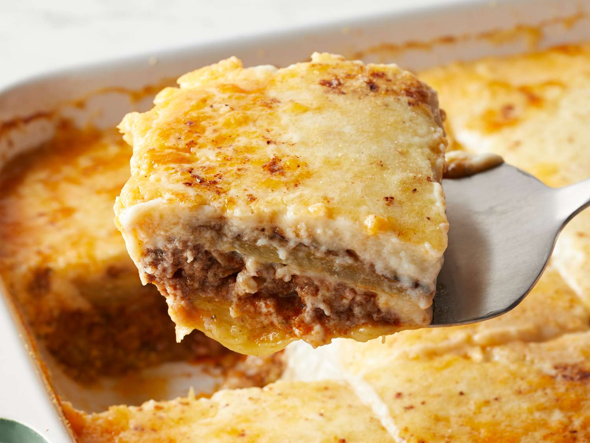

Moussaka

Description
Moussaka is an eggplant- or potato-based dish, often including ground meat, which is common in the Balkans and the Middle East, with many local and regional variations.
Ingredients
- 3 eggplants, peeled and cut lengthwise into 1/2 inch thick slices;
- salt to taste;
- ¼ cup olive oil;
- 1 tablespoon butter;
- 1 pound lean ground beef;
- 2 onions, chopped;
- 1 clove garlic, minced;
- ground black pepper to taste;
- 2 tablespoons dried parsley;
- ½ teaspoon fines herbs;
- ¼ teaspoon ground cinnamon;
- 1 can tomato sauce;
- 1 egg, beaten;
- 4 cups milk;
- ½ cup butter;
- 6 tablespoons all-purpose flour;
- 1 ½ cups freshly grated Parmesan cheese.
Steps
- Lay eggplant slices on paper towels; sprinkle lightly with salt. Let sit for 30 minutes to draw out moisture, then pat dry with paper towels. Warm olive oil in a skillet over high heat. Fry eggplant until browned, 2 to 3 minutes per side. Drain on paper towels; set aside.
- Melt 1 tablespoon butter in a large skillet over medium heat. Stir in ground beef, onions, and garlic; season with salt and black pepper. Cook and stir until beef is browned, 8 to 10 minutes.
- Add parsley, fines herbs, cinnamon, and 1/4 teaspoon nutmeg. Pour in tomato sauce and wine; mix well. Simmer for 20 minutes. Allow to cool, then stir in beaten egg.
- Scald milk in a saucepan over medium heat. At the same time, melt 1/2 cup butter in a large skillet over medium heat.
- Whisk flour into butter until smooth. Lower heat; gradually pour in scalded milk, whisking constantly until it thickens. Season béchamel sauce with salt and white pepper.
- Preheat the oven to 350 degrees F (175 degrees C). Grease a 9x13-inch baking dish. Arrange a single layer of eggplant in the prepared baking dish.
- Cover eggplant with meat sauce, then sprinkle 1/2 cup Parmesan cheese on top. Cover with remaining eggplant and sprinkle another 1/2 cup cheese on top.
- Pour béchamel sauce on top. Cover with remaining cheese. Bake in the preheated oven until bubbly and browned, about 1 hour. Serve hot and enjoy!
Back to the recipes